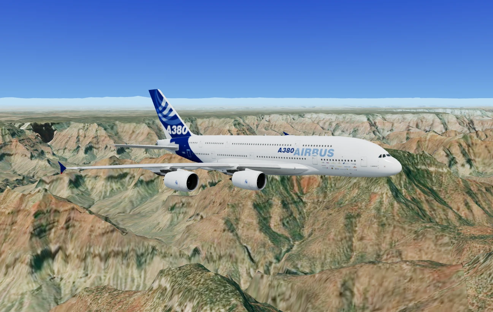

PHOTO
READY TO SHARE
Real satellite Earth. Real 3D cities. Live multiplayer. Right in your browser — free, no download.

Not artwork, and not a level someone built. Real satellite imagery over real elevation data, streaming in as you fly across it.
Type your street, your town, your old school. The sim spawns you right above it with real satellite terrain streaming in live. Your home town is a level.
Every pilot online shares one sky. See their planes, read the global chat, meet up over Manhattan.
Ask for taxi, takeoff, a climb, a descent, an approach. A real voice reads back your clearance, hands you to the next station and assigns your gate.
The airliners around you are the ones actually in the sky at that moment, streamed from live ADS-B with their real callsigns and routes.
City blocks are built from OpenStreetMap footprints and roofed with satellite imagery, anywhere on Earth. Over Tokyo you get the government's own 3D models.
A319, A320, A321, A350, both 787s, the 747-8F freighter, the double-deck A380, a Learjet 60, an F-16 Fighting Falcon and a utility helicopter.
Every large and medium airport on Earth is searchable by name, city or ICAO code. LOWI to KJFK.
Clear blue, scattered clouds, heavy rain or a full storm with lightning. Dawn, day or dusk. You decide before takeoff.
Flight school teaches you to climb, turn and land. Missions send you through canyon gates for stars.
World Flight Simulator is a free, no-download flight simulator that runs right in your web browser on PC, Mac and mobile. Take off from anywhere on Earth and fly a Boeing 787 Dreamliner over real satellite imagery, true-elevation terrain and 3D cities built from OpenStreetMap, the same real-world map data that powers professional mapping, streamed live as you fly. No installs, no launcher, no account: just open the site and start flying in seconds.
Depart from famous landmarks and international airports, or search any city, mountain, island or coastline on the planet and spawn straight into the cockpit. Buzz the Manhattan skyline, thread the Grand Canyon, climb over Mount Everest, or make a scenic approach into your own home town — the entire world is your runway.
Enjoy realistic flight physics with a full glass-cockpit instrument panel, autopilot, landing gear, flaps and multiple camera views. Choose your weather — clear skies, clouds, rain or storms — and time of day. Fly online with other pilots in live multiplayer, see where the most pilots are flying around the world, and talk to everyone in the global pilot chat using your own callsign.
New to flight simulators? Start with the built-in flight school and learn to take off, turn, descend and land step by step. Ready for a challenge? Fly gate-course missions and precision landing challenges against the clock and earn stars. Whether you want a relaxing scenic flight or a demanding approach, this browser flight simulator has it — completely free.
World Flight Simulator stores your settings (callsign, quality, weather) in your browser only. Map, terrain and 3D-city imagery is streamed from Esri, AWS/Mapzen, OpenFreeMap and PLATEAU (MLIT Japan) — your IP address reaches those providers, as with any map site. If you enable multiplayer, your callsign and live aircraft position are shared with other pilots while you play. Chat messages and callsigns are checked automatically, including by an AI service, before other pilots see them, and the most recent messages are kept briefly on our server for abuse moderation. Treat chat as public.
This policy explains what World Flight Simulator ("we", "us") processes and why. We are the data controller for the limited processing described below and can be reached at [email protected].
Stored in your browser only (localStorage): callsign, graphics quality, weather/time preferences, mission progress, and your consent choice. We run no accounts, no advertising and no tracking cookies. This data never leaves your device except as described below and you can erase it anytime by clearing site data in your browser.
Aggregate analytics. We use Plausible Analytics to count page views and see which pages people find useful, and Cloudflare Web Analytics to measure how quickly pages actually load for real visitors. Both are cookieless: neither sets a cookie, stores anything in your browser, follows you across other websites, builds a profile of you, or identifies you personally. They report totals — how many visits, how fast the site was — never individuals, which is why this site needs no cookie banner.
Multiplayer (optional): while connected, your callsign, aircraft type and live position are broadcast to other connected players and relayed through the game server. The server holds your live position in memory only and drops it within seconds of disconnect. Chat is logged. Every message you send is relayed to all connected players and also kept on the relay — with your callsign, the time and the country your IP resolves to — in a rolling buffer of the most recent 200 messages, so the operator can act on abuse reports. Older messages fall out of the buffer as new ones arrive, and the whole buffer is erased whenever the server restarts. Nothing is written to disk. The same applies to a rolling log of recent takeoffs (callsign, aircraft, departure coordinates and times). Treat chat as public: don't put personal data in your callsign or your messages.
Automatic chat moderation. Every chat message, and every callsign, is checked before other players see it by an AI model (OpenAI GPT-5 nano, run for us by Replicate, Inc.); if that service is unavailable, a simple word filter on our server is used instead. Only the text of the message or the callsign is sent for checking, never who wrote it or anything else about you. Replicate is based in the United States, so this text leaves the EU; Replicate deletes it after about an hour, and it is not used to train AI models. A message the check refuses is not shown to anyone else: you see a short note saying why, and it counts as a warning; fifty warnings within half an hour suspend you from chat for 10 minutes. Refused messages are kept, with the callsign and country, in the operator's live moderation view until the server restarts, so that mistakes can be spotted. The answer for an identical message or callsign is remembered for up to 12 hours so it is not checked twice. Legal basis: our legitimate interest in keeping a chat used by all ages safe (Art. 6(1)(f)).
Moderation restrictions. If the operator silences a player for abuse, the restriction is tied to the random device identifier their browser holds, noted with the callsign they used at the time, and lasts until the operator lifts it.
Approximate location (optional): if you press "Fly near me", or "Start flying" without choosing a destination, we ask a geolocation service (ipwho.is) once for the approximate city your IP address resolves to, solely to start your flight nearby. The result is cached in your browser and the lookup is never repeated. We do not store your IP or location on our servers. Clearing site data removes it.
Third-party content providers: map imagery, elevation, buildings, geocoding, live flight data and open-data 3D city models are fetched directly by your browser from Esri, AWS Open Data (Mapzen Terrarium), OpenFreeMap, OpenStreetMap (Nominatim, Photon), PLATEAU (MLIT Japan) and airplanes.live / adsb.lol. Those requests expose your IP address and tile coordinates to the respective provider under their own privacy policies (see Esri, OSM). Web fonts are served by Google Fonts.
Functional storage and content delivery are processed as strictly necessary to provide the service you request (Art. 6(1)(b)). Multiplayer and chat run with your agreement given on the entry screen (Art. 6(1)(a)); withdraw it anytime by clearing this site's browser data, which also removes every setting we store. Apart from a moderation restriction described above, the only server-side data that can be linked to you is the short-lived moderation data described above and under "Server logs", and it expires on its own. Access and erasure requests are therefore usually satisfied by clearing your browser storage; for anything else, including a chat message you want pulled from the live buffer, write to [email protected]. You also have the right to complain to your local supervisory authority (in Cyprus, the Office of the Commissioner for Personal Data Protection).
World Flight Simulator has no age rating. Multiplayer broadcasts a callsign and live position to strangers and includes open chat, which is filtered automatically but no filter is perfect. We do not knowingly direct that part of the service to children under 14 (the digital-consent age in Cyprus) without the involvement of a parent or guardian. Children can fly single-player freely; a parent should decide about multiplayer and chat. Choose a callsign that is not your real name, and never share personal details in chat. If you believe a child has shared personal data through the service, contact us and we will remove it from the live session.
The multiplayer relay keeps short-lived operational data in memory only: connection counts, session length, the country your IP resolves to, aircraft and device-type totals, a rolling log of recent takeoffs, and the rolling chat log described above. The operator can read these on a password-protected moderation page in order to answer abuse reports and keep the server running; that page shows callsigns, countries, the IP address of each live connection while it is connected, and the refused messages described above. Operator actions and automatic mutes are recorded in an audit trail on the same basis.
Visitor counting. Each page load sends one request to the relay so we can see how many distinct people visit. The relay does not store your IP address for this. It stores a one-way SHA-256 hash of it, salted with a random value generated when the server starts, and keeps only the time that hash was last seen. The salt exists nowhere else and is discarded on restart, so the hashes cannot be reversed, cannot be linked to you, and cannot be matched against any earlier or later run of the server. We use it to count unique visitors over the last hour, day, three days, week and month, and for nothing else. No cookie is set and nothing is stored in your browser for this.
None of it is written to disk, sold, shared with anyone, or used to profile or advertise to you, and all of it disappears whenever the server restarts (which happens on every deployment); a restriction the operator has placed is the only thing kept longer. Our legitimate interest in keeping the service usable and safe is the legal basis for this moderation data (Art. 6(1)(f)); if you want a message you sent removed from the live buffer before it rolls out on its own, write to [email protected] with your callsign and roughly when you sent it. Your IP address is shown to the operator only while you are connected, and is not retained after you disconnect.
Last updated: 16 October 2026.
World Flight Simulator is a free browser flight game provided "as is", without warranties of any kind. It is not a navigation, training or safety tool — see the notices below. Contact details are at the end of these terms.
Fair use: no harassment, hate speech, sexual content, sharing or asking for personal details, impersonation, spam, or unlawful content in callsigns or chat. An automatic AI check runs on every message and callsign, with a word filter as its backup, and spam (repeating or copy-pasting the same message, flooding the chat, mashing keys) is refused by simple rules on our server. A refused message is not shown and counts as a warning, fifty warnings within half an hour mean a temporary suspension from chat, and an offensive callsign is shown to others as PILOT. Recent chat is kept briefly so the operator can act on reports. See the Privacy Policy for exactly what that means. The operator may disconnect or block abusive clients. You are responsible for what you transmit.
Liability: to the maximum extent permitted by law, the operator is not liable for damages arising from use of the service, service interruptions, or third-party content. Nothing here limits rights you have as a consumer that cannot be limited by law. These terms are governed by the laws of the Republic of Cyprus.
Changes: the game and these terms may change as the project develops. The date below marks the current version; continuing to play after a change means you accept it.
Not for real-world aviation. Flight models, instruments, airport and runway data, procedures, weather and performance figures are simplified, approximate and sometimes deliberately forgiving. Never use World Flight Simulator for flight training, navigation, flight planning, weather assessment, emergency procedures or any other real-world aviation decision.
Map, terrain and airport data. Satellite imagery, elevation, 3D buildings, place search results and the airport database come from third parties and open datasets. They may be outdated, incomplete, misplaced or unavailable, and coverage varies by region. Airport positions, runway headings and elevations are approximations suitable for a game, nothing more.
Live air traffic. Real aircraft shown on the map come from volunteer-fed open ADS-B networks (airplanes.live, adsb.lol) and route data from adsbdb.com. It is delayed, incomplete and often wrong; many aircraft are not visible at all. It is shown as a game feature and must never be used for any operational, tracking, security or safety purpose.
Aircraft, airlines and trademarks. This is an independent game. Aircraft and manufacturer names (Airbus, Boeing, Dassault and others), airline names, callsigns and liveries are used descriptively and remain the property of their owners. No manufacturer, airline, airport or authority is affiliated with, sponsors, endorses or has approved this project. Aircraft specifications and descriptions in the game are simplified summaries for gameplay flavour, not manufacturer documentation.
Content: map and 3D data belong to their providers (Esri, Maxar, Mapzen/AWS, OpenStreetMap contributors, OpenFreeMap, PLATEAU / MLIT Japan) and are used under their respective terms and open licences; attribution is shown in-app. The community 3D aircraft model remains under its author's licence. If you believe any asset here infringes your rights or is wrongly attributed, email [email protected] with the details and we will review and, where appropriate, remove it promptly.
Contact: [email protected].
Last updated: 16 October 2026.
Switch to it for this flight? The left stick flies, the triggers are the throttle and the right stick moves the camera. Your keyboard keeps working either way.
Chat is for signed-in pilots. Use Google or Discord for one tap, or sign in with your email.
Pick a username: it is how friends will find you. Your callsign stays your name in chat.
By creating an account you agree to the and the . We email you only to confirm your address or reset your password.
We sent a link to . Open it to confirm your email, then come back here.
Nothing after a minute? Check your spam folder.
Enter the email you signed up with and we will send you a link to choose a new password.
Your username is how other players will find you. Your callsign stays your name in chat.
Your callsign stays your name in chat, and nobody else can see which account you used. With Google or Discord we never see your password and keep only an account number, never your email.
| W / S | Nose up / down |
| A / D | Roll left / right |
| E / Q | Throttle up / down |
| ◄ / ► | Rudder / ground steering |
| SPACE | Wheel brakes (hold) |
| X | Autopilot — holds altitude & heading, or flies to your waypoint (NAV) |
| P | Pause / resume |
| G · F | Landing gear · flaps |
| C | Camera — chase, cockpit, orbit, wing, tail, nose, tower, flyby |
| MOUSE DRAG | Look around · WHEEL zoom |
| 1 / 2 / 3 | Dawn / day / dusk |
| N | Minimap on / off — tap an airport dot to set destination |
| V | Hide instruments (clean screenshot mode) |
| F2 | Photo — capture the current view as a share card (works mid-drag) |
| ESC | Pause (also closes the big map) |
| M · H | Sound · this panel |
| LEFT STICK | Fly — roll and pitch. Back raises the nose. |
| RIGHT STICK | Look around — orbits the camera, both axes. Hold it off centre and the view stays there. |
| RT / LT | Throttle up / down — pressure sensitive |
| LB / RB | Rudder left / right |
| B · X | Landing gear · flaps |
| Y · A | Autopilot · wheel brakes (hold) |
| START · BACK | Pause · change camera |
| Plug one in and it offers itself, or switch it on under SETTINGS. You are asked each time you play and nothing is stored. The keyboard keeps working alongside it, so you can put the stick down whenever you like. Full controller guide ▸ | |